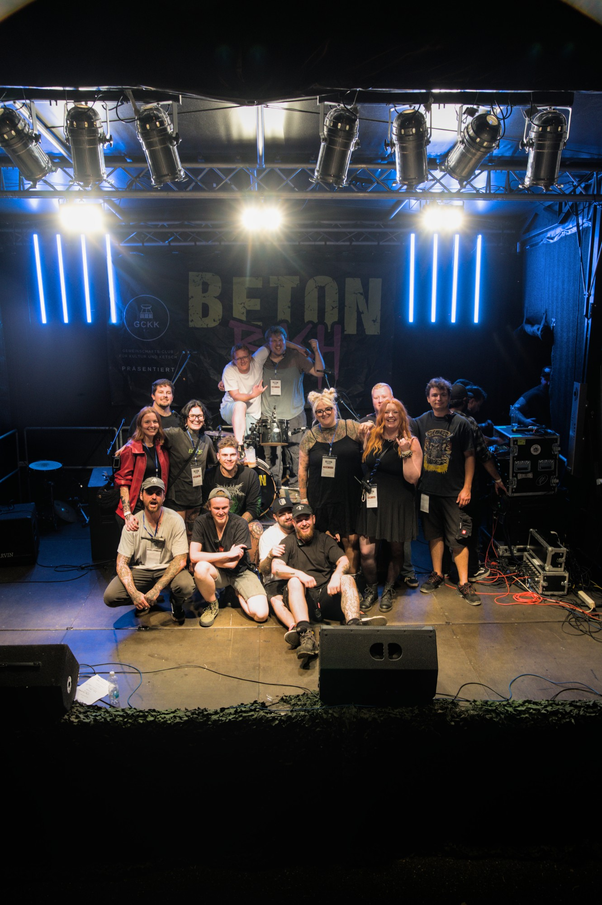

Presse
Wer wir sind, wie wir entstanden sind, und wie du uns erreichst.
Der GCKK fängt mit einem Anruf um 7 Uhr morgens an. André hatte mitbekommen, dass eine Tanzschule in Hockenheim umzieht und ihre alte PA-Anlage loswerden wollte, und rief sofort bei Nikolas an. Der schnappte sich einen Anhänger, fuhr direkt hin, und gemeinsam haben sie die komplette Anlage rausgeholt. Was folgte, war Kleinarbeit: Endstufen gekauft, repariert, die Technik generalüberholt. Dann ging's los.
2016 und 2017 haben wir mit dem Zeug Fasching gemacht, unter dem Namen "Amateur Karnevalswerke". Danach kamen Geburtstage dazu – mit einer Bühnen- und Soundanlage, die für jede Hausparty komplett überdimensioniert war, dazu Live-Auftritte. Irgendwann hat uns bei einem dieser Events jemand gefragt: "So viel Aufwand wie ihr da reinsteckt – warum macht ihr das eigentlich nicht als Festival?" Genau das haben wir dann gemacht: erst privat, nur für geladene Gäste. Das kam so gut an, dass wir daraus ein öffentliches Festival gemacht haben – das Beton Bash. Zur Organisation und Unterstützung der gemeinnützigen Arbeit haben wir zugleich den GCKK gegründet. Der wartet, ehrlich gesagt, immer noch auf seine offizielle Eintragung.
Alle Infos, Genehmigungen und das komplette Equipment laufen bei Nikolas zusammen, der auch für Presseanfragen der richtige Ansprechpartner ist. Für Booking-Fragen: Alex kennt die Szene und bringt jedes Jahr die Bands zusammen. Das ganze Team dahinter stellen wir auf der Team-Seite vor.
Rund 97 Gäste haben die zweite öffentliche Auflage des Beton Bash in Hockenheim gefeiert. Fünf Bands sorgten trotz eines kurzen Schauers für ausgelassene Stimmung – und schon jetzt steht der nächste Termin fest.
Hockenheim. Am Herrenteich ging es am 29. August wieder zur Sache: Der Ketscher Kulturverein GCKK (Gemeinschafts-Club für Kultur und Ketsch) lud zur zweiten öffentlichen Auflage seines Open-Air-Festivals Beton Bash, und rund 97 Gäste folgten der Einladung. Die allererste Ausgabe hatte noch privaten Charakter und war nur für geladene Gäste gedacht – seither ist daraus ein öffentliches Festival geworden. Ein kurzer Regenschauer zog zwar über das Gelände, tat der Stimmung aber keinen Abbruch – das Programm lief wie geplant weiter.

Die Crew des Beton Bash 2026 auf der Bühne am Herrenteich. © Simon Krieger
Fünf Bands standen an diesem Abend auf der Bühne: Gouge, Wave Off, Chocolate Stash, Truth Grip und Bastard of Young. Besonders gut kam dabei Wave Off an, die sich mittlerweile zur festen Größe beim Beton Bash entwickelt haben. Für Stimmung zwischen den Auftritten sorgte außerdem Alex, der beim GCKK fürs Booking verantwortlich ist und mit seinen Ansagen die Übergänge zwischen den Bands zum eigenen Programmpunkt machte.
„Für uns war es das stressigste Jahr bisher – aber auch das mit den meisten Learnings", sagt Nikolas Martin, 1. Vorsitzender des GCKK. Der Verein organisiert das Festival inzwischen im zweiten Jahr in Folge als öffentliche Veranstaltung und wächst dabei spürbar über sich hinaus.
Für Verpflegung sorgte wie gewohnt ein veganes Angebot vor Ort. Wer beim Beton Bash mitfeiern will, muss sich nicht lange gedulden: Die dritte öffentliche Auflage ist bereits terminiert. Am 11. September 2027 soll wieder am Herrenteich gefeiert werden.
Gemeinschafts-Club für Kultur und Ketsch (GCKK)
01.03.2025 in Ketsch
Nikolas Martin (1. Vorsitzender)
Jan Papirnik (2. Vorsitzender)
7
Verein in Gründung – Eintragung beim Amtsgericht Mannheim beantragt (Az. 00 AR 2006/25)
Beton Bash (jährliches Open-Air-Festival, Hockenheim)
Für Presseanfragen, Interviews oder Bildmaterial melde dich direkt bei uns: